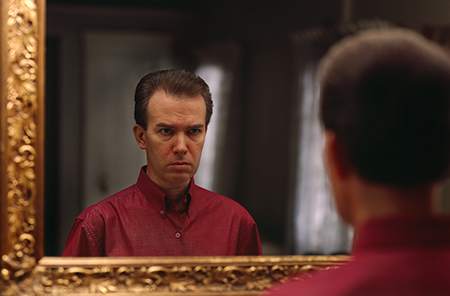

Art Museum Exhibits
'John Mark Karr'
The five feet by eight feet mirror image artwork hangs in unuttered effigy in the Santa Barbara Museum of Art with works by Monet and Picasso nearby.
INTERNATIONAL (Lei Sussurra) July 4, 2011 -- Is JonBenet Ramsey suspect John Mark Karr glaring in disgust at his reflection or glued to himself in narcissistic delight? Artists Jason and Carlos Sanchez traveled from Canada to the United States in 2007 to capture the timeless pose of the "monster in the mirror." Critics hate the blowup, not for their dislike of the artists' work but for their disgust for John Mark Karr as a person.
Wrinkled faced and twenty pounds heavier, spectators might need to read the title to recognize the evil face in the "who's the fairest of them all" rendition of Ramsey killer, John Mark Karr. This is not the slimmer, more feminine Karr remembered from the overly exposed media coverage of the murder suspect in 2006. The shirt should be familiar as the one worn by Karr on his extradition flight from Bangkok to Boulder beneath a burgundy tie, now in possession of a one time Karr confidant who divulged to Karr's enemies that she had it along with other Karr collectibles.
The exhibited work might spark protest from the citizens of the conservative southern California seaside city. Santa Barbara is the cite of deceased President Ronald Regan's ranch with such notable homeowners as Steven Spielberg, Tom Cruise, and Oprah Winfrey.
The Santa Barbara Museum of Art's New Faces of the Collection exhibition opened on May 28, 2011 with twenty-seven new photographic additions to the museum's collection. John Mark Karr was a gift of the Catharine Clark Gallery in San Francisco.
Of the twenty-seven new faces along with John Mark Karr is the work Modern Sleep 1 2004 by artist Gottfried Helnwein whose work has depicted dead little girls in such works as his Last Child series of 2008 seen here, here and here. Helnwein was the artist who shot Karr favorite, Marilyn Manson's unreleased album art that featured the shock rocker posed in Nazi attire with little girls in his lap handling a rifle or stroking the one that Manson held. Karr has told Lei Sussurra in the past that Helnwein's photographic artwork is amongst his favorites.
The Santa Barbara Museum of Art ranks amongst the top ten regional art museums in the United States. The museum exhibits works by such artists as Claude Monet, Pablo Picasso, Auguste Renoir, and Rembrandt.
Lei Sussurra
Copyright 2011
All Rights Reserved